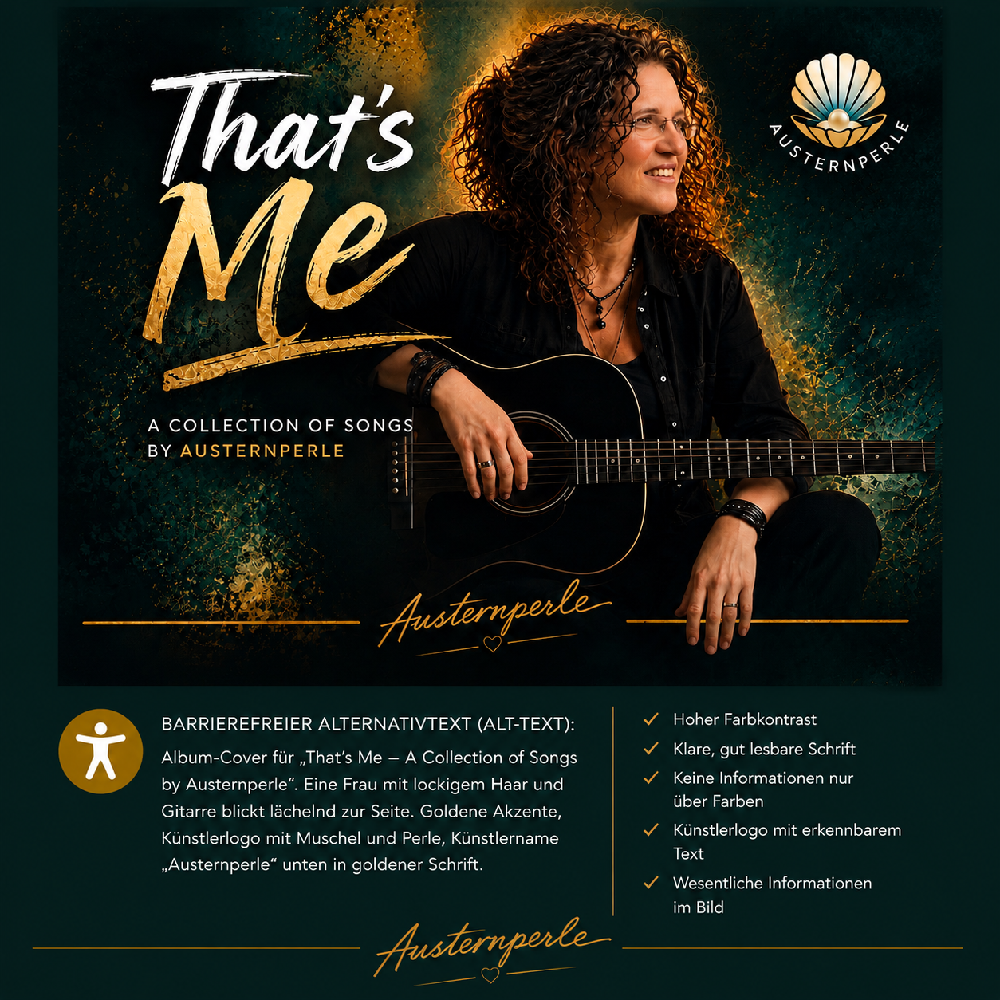

Über die Musik

Austernperle verbindet die zeitlose Tradition des Americana mit der intimen Wärme klassischer Acoustic-Folk-Arrangements. Getragen von einer feinfühligen, prägnanten Akustikgitarre und einer tiefen, warmen Gesangsstimme erzählen die Songs von weiten Wegen, stillen Momenten und echten Emotionen. Ohne künstliche Schnörkel, dafür mit purer Leidenschaft und Liebe zum organischen Klang.
Musik & Streaming
Die Veröffentlichungen stehen kurz bevor. Sobald die Tracks live sind, findest du Austernperle auf folgenden Plattformen: